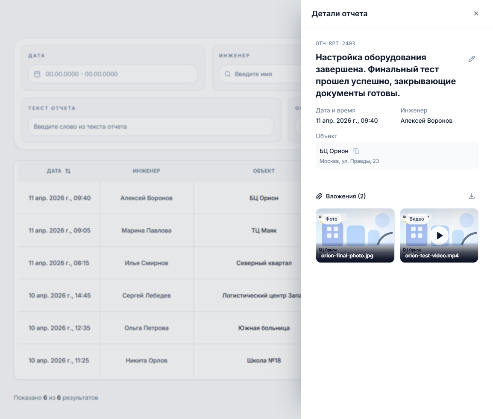
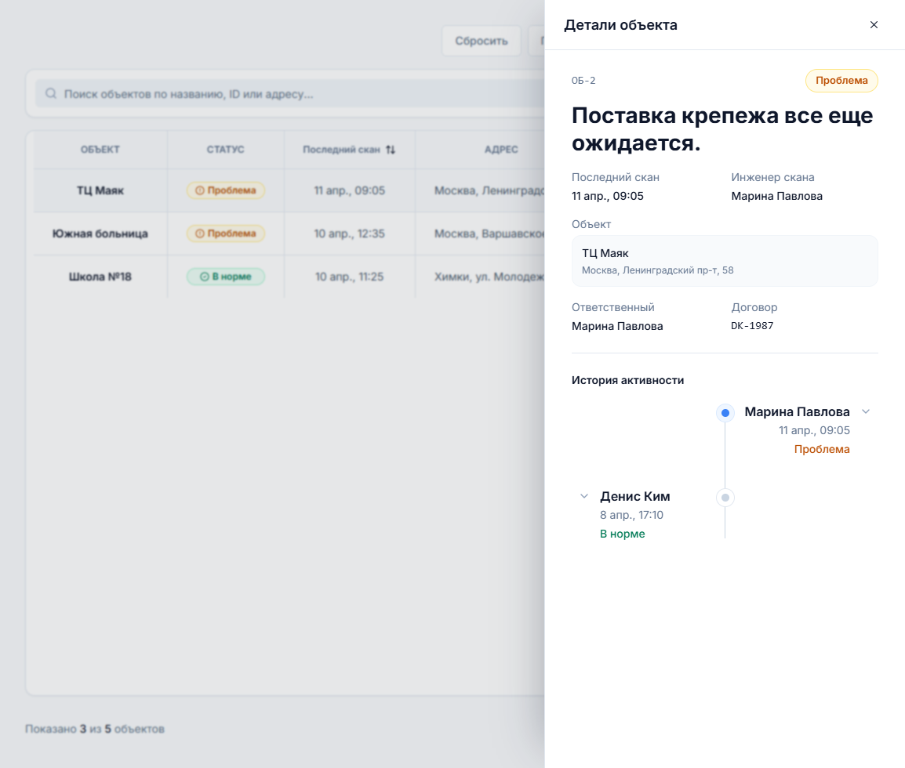
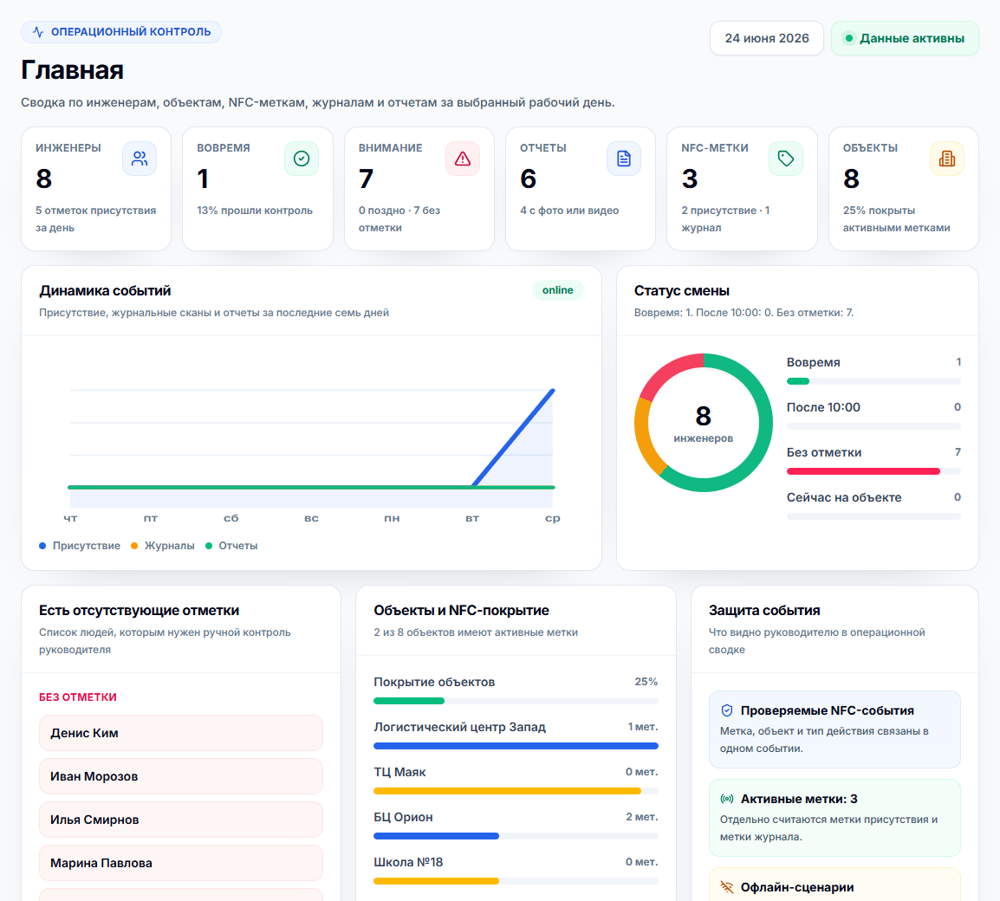
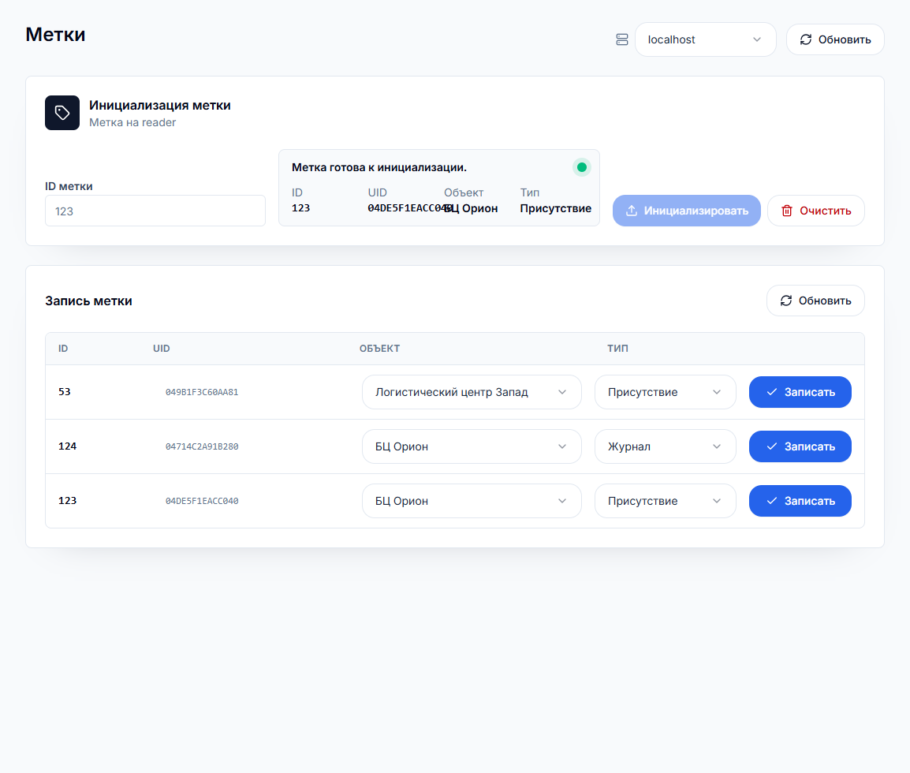
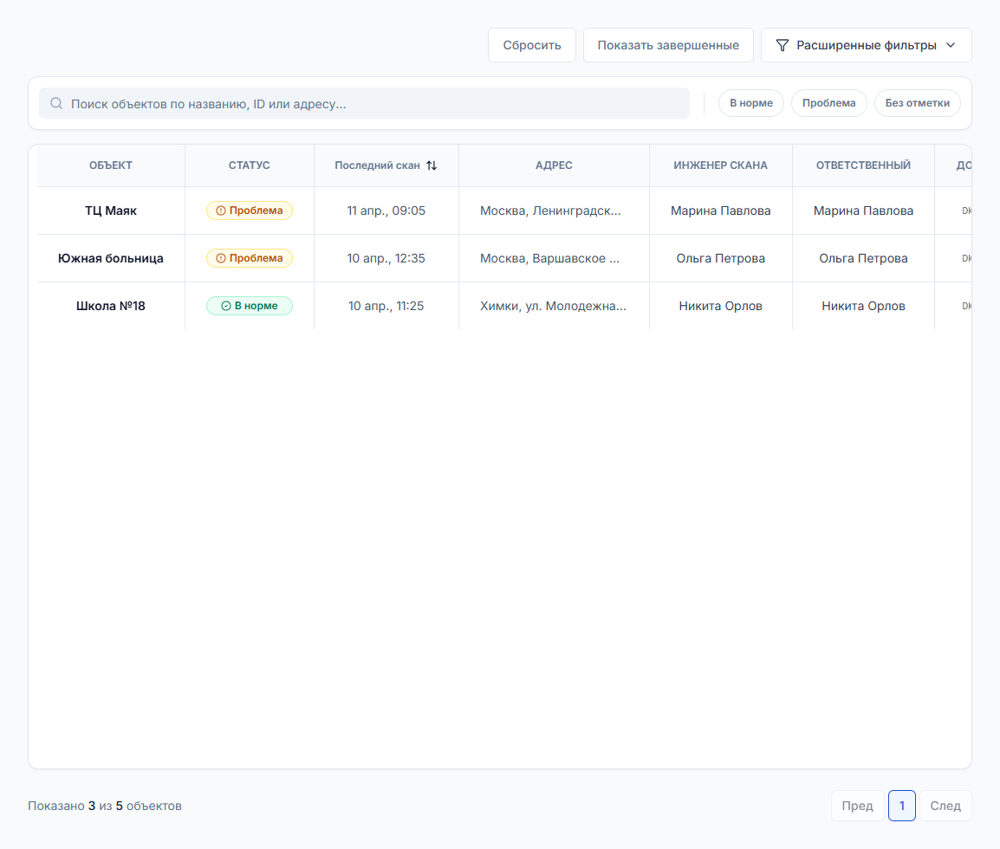
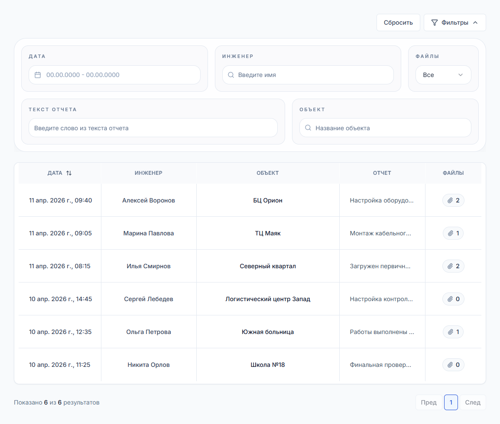

Факт присутствия
Инженер подтверждает прибытие и работу на объекте через NFC-метку. Руководитель видит отметки в админке.
Решение помогает видеть, кто был на объекте, когда была подтверждена работа с журналом и какие отчеты с фото или видео переданы в офис, без проводной СКУД-инфраструктуры на каждой точке.
Что делает система
Инженер подтверждает прибытие и работу на объекте через NFC-метку. Руководитель видит отметки в админке.
Отдельная метка журнала подтверждает, что инженер дошел до нужной точки и работал с объектовой документацией.
Описание работ, фотографии, видео и файлы попадают в единый список, где их можно фильтровать по объекту, инженеру и периоду.
NFC-метки
NFC-метка закрепляется там, где нужно подтвердить реальное действие инженера: вход на объект, завершение смены или работу с журналом.
Сканирование NFC
Метка присутствия подтверждена. Событие защищено и готово к синхронизации.
В админке метка инициализируется, привязывается к объекту и получает тип: присутствие или журнал.
Мобильное приложение считывает NFC-данные, добавляет контекст действия и сохраняет событие для проверки.
Проверяются зарегистрированная метка, объект, тип действия и признаки повторного использования скана.
Отметка сразу появляется в контроле присутствия, статусах объектов, отработанном времени и отчетах.
Защита и офлайн
SMK превращает NFC-метку в физическую контрольную точку: инженеру не нужно подключаться к терминалу, а офис получает событие с криптографической проверкой и понятным статусом синхронизации.
Ключ создается на устройстве и привязывается к конкретной установке приложения.
Идентификатор, счетчик чтения и MAC помогают отличить настоящий скан от повтора.
Если связи нет, событие сохраняется и отправляется после восстановления сети.
В админке видно, где и когда была сделана отметка: уже синхронизирована она или еще ожидает связи.
При привязке приложения создается ключевой материал на базе системной энтропии и действия пользователя. Приватная часть остается на устройстве, а система регистрирует только данные для проверки.
Защищенный payload, счетчик чтения и MAC помогают выявлять подмену ссылки, повторный скан и попытку использовать старое событие повторно.
Инженер может выполнить отметку без стабильного интернета. Событие попадает в локальную очередь и синхронизируется, когда связь возвращается.
Метки размещаются в нужных физических точках объекта и дают эффект СКУД-сценария без прокладки кабелей и установки терминалов у каждой зоны.
Отчеты
Drawer с отчетом показывает дату, инженера, объект, описание работ и вложения. Это удобно для быстрой проверки без перехода между страницами.

ТО
В разделе ТО строка объекта открывает drawer с последним сканом, договором, ответственным инженером и историей отметок.

Веб-админка
Админка показывает руководителю операционную картину: присутствие инженеров, проблемные объекты, отчеты, метки, офлайн-события и динамику по дням.




NFC-метка привязана к конкретному объекту и действию, поэтому отметка становится проверяемым событием.
Руководитель видит проблемные зоны сразу: кто не отметился, где есть проблема, какие отчеты пришли.
Фото, видео, описание и объект связаны между собой, поэтому материалы не теряются в чатах.
Отметки не пропадают при нестабильной связи: приложение сохраняет событие и показывает статус синхронизации после восстановления сети.